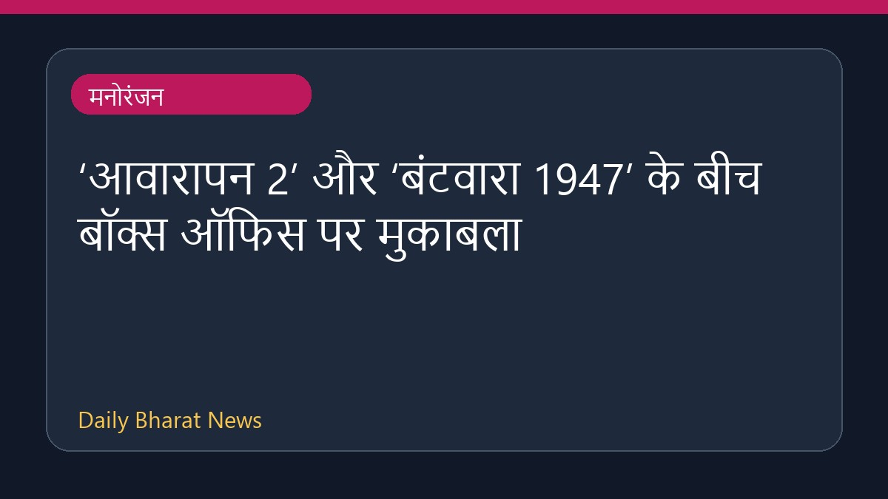

‘आवारापन 2’ और ‘बंटवारा 1947’ के बीच बॉक्स ऑफिस पर मुकाबला

स्वतंत्रता दिवस के अवसर पर रिलीज हुई फिल्मों ‘आवारापन 2’ और ‘बंटवारा 1947’ के बीच बॉक्स ऑफिस पर मुकाबला देखने को मिल रहा है। इमरान हाशमी की थ्रिलर फिल्म ‘आवारापन 2’ इस रेस में आगे निकलती नजर आ रही है। हालांकि, फिल्म की समीक्षाओं में इमरान हाशमी के अभिनय की सराहना की गई है, लेकिन इसकी पटकथा और सीक्वल को लेकर समीक्षकों की अलग-अलग राय सामने आई है। दूसरी ओर, सनी देओल की फिल्म ‘बंटवारा 1947’ को भी सकारात्मक समीक्षाएं मिल रही हैं। इस क्लैश को लेकर दर्शकों और समीक्षकों के बीच काफी चर्चा हो रही है।
मूल स्रोत: Entertainment Sources
'Awarapan 2' vs 'Batwara 1947' Independence Day box office clash: Emraan Hashmi's film races ahead of the - The Times of India ↗
'Awarapan 2' vs 'Batwara 1947' Independence Day box office clash: Emraan Hashmi's film races ahead of the - The Times of India ↗